Documentation for the 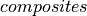 module¶
Methods to calculate composite plate properties (composite)¶
The composite module includes functions used to calculate plate properties
for laminated composites and isotropic plates.
Classical and first-order shear deformation theories are supported. For classical plate theories or classical laminated plate theories (CLPT), the relevant matrices are A, B, D, whereas for the first-order shear deformation theories (FSDT) the matrices are A, B, D, E. All these matrices are part of the 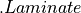 object. For isotropic plates, the object is also used for convenience.
Offset is supported, resulting in extension-bending coupling (B matrix) different than zero even for isotropic plates.
The most convenient usage is probably with the
composite.laminate.read_stack() function:
from composite.laminate import read_stack
laminaprop = (E11, E22, nu12, G12, G13, G23)
plyt = ply_thickness
stack = [0, 90, +45, -45]
lam = read_stack(stack, plyt=plyt, laminaprop=laminaprop)
and with the composite.laminate.read_isotropic() function:
from composite.laminate import read_isotropic
lam = read_isotropic(thickness=5., E=E, nu=nu)
Where the laminate stiffness matrix, the often called ABD matrix, with
shape=(6, 6), can be accessed using:
>>> lam.ABD
and when transverse shear stiffnesses are required, the ABDE matrix, with
shape=(8, 8):
>>> lam.ABDE
Composite Laminate Module (composites.laminate)¶
-
class
composites.laminate.Laminate¶ attribute
description
plies
list of plies
h
total thickness of the laminate
offset
offset at the normal direction
e1
equivalent laminate modulus in 1 direction
e2
equivalent laminate modulus in 2 direction
g12
equivalent laminate shear modulus in 12 direction
nu12
equivalent laminate Poisson ratio in 12 direction
nu21
equivalent laminate Poisson ratio in 21 direction
xiA
laminate parameters for extensional matrix A
xiB
laminate parameters for extension-bending matrix B
xiD
laminate parameters for bending matrix D
A
laminate extension matrix
B
laminate extension-bending matrix
D
laminate bending matrix
E
laminate transferse shear matrix
ABD
laminate ABD matrix
ABDE
laminate ABD matrix with transverse shear terms
scf_k13
shear correction factor 13
scf_k23
shear correction factor 23
Methods
Use the ABDE matrix based on lamination parameters.
calc_constitutive_matrix(self)Calculates the laminate constitutive matrix
calc_equivalent_modulus(self)Calculates the equivalent laminate properties.
Calculate the lamination parameters.
calc_scf(self)Calculate improved shear correction factors
force_balanced_LP(self)Force balanced lamination parameters
force_orthotropic(self)Force an orthotropic laminate
force_symmetric(self)Force a symmetric laminate
force_symmetric_LP(self)Force symmetric lamination parameters
rebuild
-
calc_ABDE_from_lamination_parameters(self)¶ Use the ABDE matrix based on lamination parameters.
Given the lamination parameters
xiA,xiB,xiCandxiD, the ABD matrix is calculated.
-
calc_constitutive_matrix(self)¶ Calculates the laminate constitutive matrix
This is the commonly called
ABDmatrix withshape=(6, 6)when the classical laminated plate theory is used, or theABDEmatrix when the first-order shear deformation theory is used, containing the transverse shear terms.
-
calc_equivalent_modulus(self)¶ Calculates the equivalent laminate properties.
- The following attributes are calculated:
e1, e2, g12, nu12, nu21
-
calc_lamination_parameters(self)¶ Calculate the lamination parameters.
- The following attributes are calculated:
xiA, xiB, xiD, xiE
-
calc_scf(self)¶ Calculate improved shear correction factors
Reference:
Vlachoutsis, S. “Shear correction factors for plates and shells”, Int. Journal for Numerical Methods in Engineering, Vol. 33, 1537-1552, 1992.
http://onlinelibrary.wiley.com/doi/10.1002/nme.1620330712/full
Using “one shear correction factor” (see reference), assuming:
constant G13, G23, E1, E2, nu12, nu21 within each ply
g1 calculated using z at the middle of each ply
zn1 = 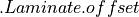
- Returns
- k13, k23tuple
Shear correction factors. Also updates attributes: 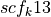 and 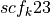.
-
force_balanced_LP(self)¶ Force balanced lamination parameters
The lamination parameters
 and 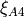 are set to null
to force a balanced laminate.
and 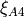 are set to null
to force a balanced laminate.
-
force_orthotropic(self)¶ Force an orthotropic laminate
The terms 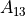, 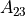, 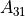, 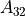,
 , 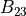, 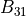, 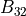,
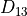,
, 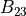, 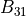, 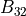,
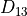,  , 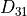, 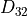 are set to zero to force an
orthotropic laminate.
, 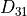, 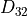 are set to zero to force an
orthotropic laminate.
-
force_symmetric(self)¶ Force a symmetric laminate
The
 terms of the constitutive matrix are set to zero.
terms of the constitutive matrix are set to zero.
-
force_symmetric_LP(self)¶ Force symmetric lamination parameters
The lamination parameters 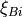 are set to null to force a symmetric laminate.
-
-
composites.laminate.read_isotropic(thickness, E, nu, offset=0.0, calc_scf=True)¶ Read data for an isotropic plate
object is returned based on the inputs given.
- Parameters
- thicknessfloat
Plate thickness.
- Efloat
Young modulus.
- nufloat, optional
Poisson’s ratio.
- offsetfloat, optional
Offset along the normal axis about the mid-surface, which influences the extension-bending coupling (B matrix).
- calc_scfbool, optional
If True, use 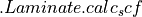 to compute shear correction factors, otherwise the default value of 5/6 is used.
-
composites.laminate.read_lamination_parameters(thickness, laminaprop, rho, xiA1, xiA2, xiA3, xiA4, xiB1, xiB2, xiB3, xiB4, xiD1, xiD2, xiD3, xiD4, xiE1, xiE2, xiE3, xiE4)¶ Calculates a laminate based on the lamination parameters.
The lamination parameters:
 , 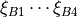,
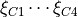, 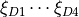,
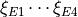
, 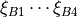,
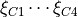, 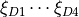,
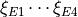are used to calculate the laminate constitutive matrix.
- Parameters
- thicknessfloat
The total thickness of the laminate
- laminaproptuple
The laminaprop tuple used to define the laminate material.
- rhofloat
Material density.
- xiA1 to xiD4float
The 16 lamination parameters used to define the laminate.
- Returns
- lam
laminate with the ABD and ABDE matrices already calculated
-
composites.laminate.read_stack(stack, plyt=None, laminaprop=None, rho=None, plyts=None, laminaprops=None, rhos=None, offset=0.0, calc_scf=True)¶ Read a laminate stacking sequence data.
object is returned based on the inputs given.
- Parameters
- stacklist
Angles of the stacking sequence in degrees.
- plytfloat, optional
When all plies have the same thickness,
plytcan be supplied.- laminaproptuple, optional
When all plies have the same material properties,
laminapropcan be supplied.- rhofloat, optional
Uniform material density to be used for all plies.
- plytslist, optional
A list of floats with the thickness of each ply.
- laminapropslist, optional
A list of tuples with a laminaprop for each ply.
- rhoslist, optional
A list of floats with the material density of each ply.
- offsetfloat, optional
Offset along the normal axis about the mid-surface, which influences the laminate properties.
- calc_scfbool, optional
If True, use to compute shear correction factors, otherwise the default value of 5/6 is used
Notes
plytorplytsmust be suppliedlaminaproporlaminapropsmust be suppliedFor orthotropic plies, the
laminapropshould be:laminaprop = (E11, E22, nu12, G12, G13, G23)
For isotropic plies, the
laminapropshould be:laminaprop = (E, nu)
Composite Lamina Module (composites.lamina)¶
-
class
composites.lamina.Lamina¶ attribute
description
plyid
id of the composite lamina
matobj
a pointer to a MatLamina object
h
ply thickness
theta
ply angle in degrees
L
transformation matrix for displacements to laminate csys
R
transformation matrix for stresses to laminate csys
T
transformation matrix for stresses to lamina csys
QL
constitutive matrix for plane-stress in laminate csys
Methods
rebuild(self)Update constitutive matrices
-
rebuild(self)¶ Update constitutive matrices
-
Composite Matlamina Module (composites.matlamina)¶
-
class
composites.matlamina.MatLamina¶ Orthotropic material lamina
attributes
description
e1
Young Modulus in direction 1
e2
Young Modulus in direction 2
g12
in-plane shear modulus
g13
transverse shear modulus for plane 1-Z
g23
transverse shear modulus for plane 2-Z
nu12
Poisson’s ratio 12
nu13
Poisson’s ratio 13
nu23
Poisson’s ratio 23
nu21
Poisson’s ratio 21: use formula nu12/e1 = nu21/e2
nu31
Poisson’s ratio 31: use formula nu31/e3 = nu13/e1
nu32
Poisson’s ratio 32: use formula nu23/e2 = nu32/e3
rho
especific mass (mass / volume)
a1
thermal expansion coeffiecient in direction 1
a2
thermal expansion coeffiecient in direction 2
a3
thermal expansion coeffiecient in direction 3
tref
reference temperature
st1,st2
allowable tensile stresses for directions 1 and 2
sc1,sc2
allowable compressive stresses for directions 1 and 2
ss12
allowable in-plane stress for shear
strn
allowable strain for direction 1
q11
lamina constitutive constant 11
q12
lamina constitutive constant 12
q13
lamina constitutive constant 13
q21
lamina constitutive constant 21
q22
lamina constitutive constant 22
q23
lamina constitutive constant 23
q31
lamina constitutive constant 31
q32
lamina constitutive constant 32
q33
lamina constitutive constant 33
q44
lamina constitutive constant 44
q55
lamina constitutive constant 55
q66
lamina constitutive constant 66
u
matrix with lamina invariants
c
matrix with lamina stiffness coefficients
Notes
For isotropic materials when the user defines
 and
and  ,
,  will be
recaculated based on equation: 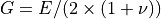; in a lower
priority if the user defines and , will be recaculated based
on equation: 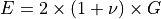.
will be
recaculated based on equation: 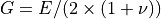; in a lower
priority if the user defines and , will be recaculated based
on equation: 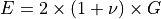.Methods
rebuild(self)Update constitutive and invariant matrices
-
rebuild(self)¶ Update constitutive and invariant matrices
-
-
composites.matlamina.read_laminaprop(laminaprop=None, rho=None)¶ Returns a
MatLaminaobject based on an inputlaminaproptuple- Parameters
- laminaproplist or tuple
Tuple containing the folliwing entries:
(e1, e2, nu12, g12, g13, g23, e3, nu13, nu23)
for othotropic materials the user can only supply:
(e1, e2, nu12, g12, g13, g23)
for isotropic materials the user can only supply:
(e, nu) # new
(e1, e2, nu12) # legacy, kept for compatibility with old codes
symbol
value
e1
Young Module in direction 1
e2
Young Module in direction 2
nu12
12 Poisson’s ratio
g12
12 Shear Modulus
g13
13 Shear Modulus
g23
13 Shear Modulus
e3
Young Module in direction 3
nu13
13 Poisson’s ratio
nu23
23 Poisson’s ratio
- rhofloat, optional
Material density
- Returns
- matlamMatLamina
A
MatLaminaobject.
History and Roadmap¶
License¶
Copyright (c) 2012-2020 Saullo G. P. Castro (castrosaullo@gmail.com)
All rights reserved.
Redistribution and use in source and binary forms, with or without modification,
are permitted provided that the following conditions are met:
Redistributions of source code must retain the above copyright notice, this
list of conditions and the following disclaimer.
Redistributions in binary form must reproduce the above copyright notice, this
list of conditions and the following disclaimer in the documentation and/or
other materials provided
THIS SOFTWARE IS PROVIDED BY THE COPYRIGHT HOLDERS AND CONTRIBUTORS "AS IS" AND
ANY EXPRESS OR IMPLIED WARRANTIES, INCLUDING, BUT NOT LIMITED TO, THE IMPLIED
WARRANTIES OF MERCHANTABILITY AND FITNESS FOR A PARTICULAR PURPOSE ARE
DISCLAIMED. IN NO EVENT SHALL THE COPYRIGHT HOLDER OR CONTRIBUTORS BE LIABLE FOR
ANY DIRECT, INDIRECT, INCIDENTAL, SPECIAL, EXEMPLARY, OR CONSEQUENTIAL DAMAGES
(INCLUDING, BUT NOT LIMITED TO, PROCUREMENT OF SUBSTITUTE GOODS OR SERVICES;
LOSS OF USE, DATA, OR PROFITS; OR BUSINESS INTERRUPTION) HOWEVER CAUSED AND ON
ANY THEORY OF LIABILITY, WHETHER IN CONTRACT, STRICT LIABILITY, OR TORT
(INCLUDING NEGLIGENCE OR OTHERWISE) ARISING IN ANY WAY OUT OF THE USE OF THIS
SOFTWARE, EVEN IF ADVISED OF THE POSSIBILITY OF SUCH DAMAGE.